opt + llc pipeline, in one report you can read.| Rakshit Awasthi | rakshitawasthi17@gmail.com · Nutanix |
| Manas Ghandat | ghandatmanas@gmail.com |
| Gyanendra Banjare | gyanendrabanjare8@gmail.com · Abacus.ai |
| Chakilam Lalith Sai | lalithsaichakilam3@gmail.com · IIT Roorkee |
LLVM-Lens answers a question LLVM makes surprisingly hard to answer: what did each pass in the pipeline actually do to my code?
It runs the stock LLVM 22 tools with their own dump flags — opt
for the middle end and llc for the backend — reads the stream they
produce, and emits a single static HTML file. Open it in any browser. There is
no server, no npm, no build step, and nothing to install on the machine that
reads it.
What you get is one card per pass, holding every run that pass made: the before-and-after diff of any one of those runs and nothing else, the control-flow graph on either side of it, its timing, the analyses it ran, and the spill or register-allocation tables it produced if it was a backend pass. Every line of IR and Machine IR in the report carries the pass that wrote it, so you can click any line and walk its whole history back to the input. A flow view shows the entire lane at once, with runs that changed nothing collapsed, so the shape of the pipeline is visible in one screen instead of forty thousand lines of stdout.
You can also load your own pass plugin and have it treated as a first-class citizen of the report, badged and diffed like any stock pass.
LLVM-Lens is our implementation of the brief's LLVM Pass Transformation Analyzer (LPTA).
We wanted a good way to visualize the optimization pipeline: every pass that runs, in order, and what each one did to the code.
LLVM will tell you almost everything you need. It just won't tell you in a form you can read.
opt -print-after-all on one translation unit of a real C++ file
is tens of thousands of lines of IR, in order, with no way to ask it anything.
-print-changed is better — it only dumps when a pass actually
modified the IR — but it tells you that a pass changed something, never
what: to see the change you diff two consecutive dumps yourself, by
hand, in an editor. -debug-pass-manager gives you the order of the
pipeline and the analyses each pass requested, but none of the content.
-time-passes aggregates a pass's time over the entire lane, so when
SROAPass ran twenty-eight times you get one number and no way to split
it across the runs. And llc is a different world again: Machine IR,
different flags, different structure, and no correspondence at all between its
output and the IR you were just looking at.
So the workflow, for all of us, has been: dump everything to files, pick two, diff them, scroll, lose your place, do it again. It works. It is also why a "why is this loop not vectorized" question takes an hour.
In the second week we noticed something that changed the design. Because
opt only dumps when a pass has changed the IR, the sequence
of dumps is not a sequence of snapshots — it is a sequence of edits. A
pass that produced no dump produced no change. Which means every line in the
final module has exactly one pass that put it there, not probably and not
heuristically, but by construction.
That turns "which pass did this?" from a search into a lookup, and it is what makes the blame view well-defined rather than a guess. Everything else in LLVM-Lens serves that one property: if a line knows its author, you can ask the compiler questions instead of grepping at it.
The dumps are already a complete, ordered, line-level record of who changed what. Nobody had joined them up.
A Python package with one command, and a report that is just files.
$ llvm-lens examples/json-query/lexer.cpp -o report --passes 'default<O2>' $ open report/index.html
There is no custom LLVM pass here and no patched LLVM. LLVM-Lens drives the tools you already have and reads what they already print — a deliberate constraint, because a tool that needs its own LLVM build is a tool nobody runs on a Tuesday afternoon when they actually have a regression to chase.
Two lanes. Lane A is the opt new-pass-manager
pipeline over LLVM IR; Lane B is the llc backend
over Machine IR. They stay two tabs but join into one timeline: a synthetic
Input IR card opens lane A, an Optimized MIR card closes lane
B, and a dashed edge marks the handoff between them. Read only the middle end,
or start at the handoff and read codegen.
If opt crashes or times out, the report still gets written with
whatever was captured up to that point, and says so. A half-answer you can read
beats an exception trace, especially when the thing you are investigating is a
compiler bug.
Every figure below is a real screenshot of the tool running on a real input, rebuilt immediately before this document was written. The numbers in the prose were read back out of those same report files, not typed from memory.
One screen holds everything: the lane's passes down the left with a churn bar per row, a spine at the very top showing every pass in the lane as a tick sized by how much it changed, the selected pass's own functions below that, the panes in the middle, and a log and analysis drawer along the bottom. The coloured marks beside each pass name are that pass's line churn — green added, red removed — so the rail doubles as a density map of where the work happened.
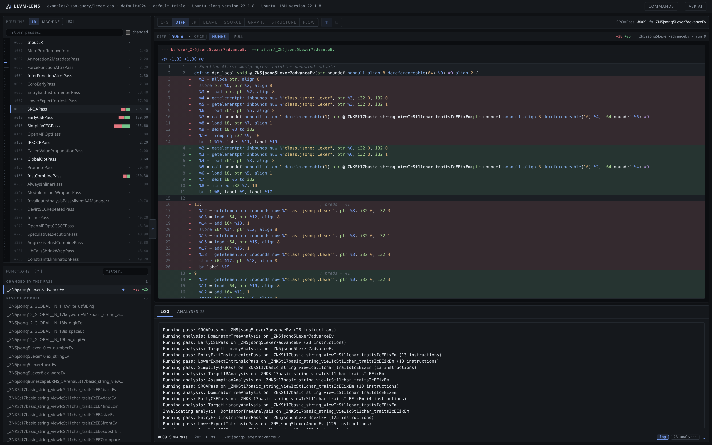
Lexer::advance. 168
cards in this report — 82 middle-end, 86 backend — covering 350 pass runs, and
22 of the middle-end cards changed something. A card is one pass however many
times it ran: SROAPass is a single row in the rail for all 28 of
its runs. The menu beside DIFF says which run the panes are reading, and
it opens on the last one, because that is the state the card leaves behind.
Card numbers are the lane position of the pass's first run. The
drawer below says this run touched one function, advance.This is the view that replaces hand-diffing two dump files. It is the before-and-after of a single pass run, unified, with the churn counted in the header. The diff is exactly one run's work — never a pass's cumulative effect, and never the four other things that happened between two arbitrary dump points. The picker in front of it is what keeps that true once a pass has run many times: it names the run on screen, and the header repeats it.
Choosing an earlier run shows that run's diff, against the state it actually replaced. That is not the same as the state before the pass's previous run, because everything else in the lane ran in between — which is why a run that skipped a function has no diff to show for it and says so, pointing at the runs that did move it.
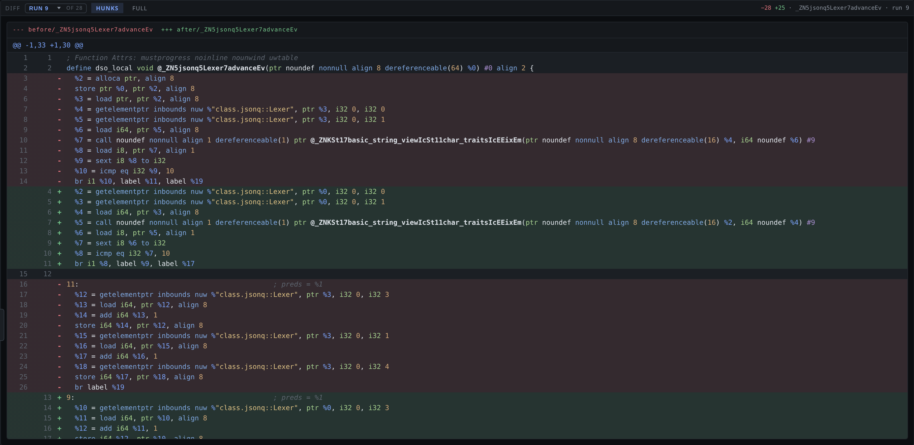
+25 −28
SROA doing what SROA does: %2 = alloca ptr, the
store of this into it, and the load
back out are all gone, and every later use now reads %0 — the
argument register — directly. The getelementptrs that follow
change from ptr %3 to ptr %0. Nothing else
in the function moved. HUNKS and FULL switch between the changed
regions and the entire function, so you can check that claim rather than trust
it.Every line of IR knows the pass that last wrote it. Blame shows that as a
gutter down the left: the ordinal of the run that produced the line, or
in if it has survived untouched since the input, in eight rotating
tints so a run's edits read as one block of colour rather than a scatter.
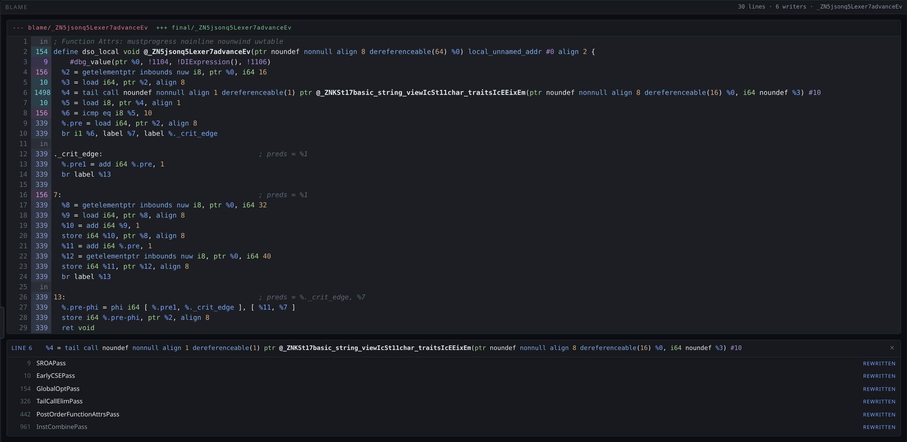
Lexer::advance after the whole default<O2>
pipeline: 30 lines, 6 writers. The in rows are the lines no
pass ever rewrote — carried through from the input. Everything else names its
author, a run ordinal into the lane. Click any row and the lineage opens below
it: every pass that touched that line since the input, oldest first, each
tagged created, rewritten or renamed — a distinction that
keeps the chain readable, since SSA renumbering turns %3 into
%7 constantly and that is not a rewrite. Each entry jumps to that
pass's card.The chain in that figure belongs to line 6, the
basic_string_view::operator[] call, and all seven of its entries
are rewrites:
| run | pass | what it did to that line |
|---|---|---|
| 9 | SROAPass | rewritten |
| 10 | EarlyCSEPass | rewritten |
| 154 | GlobalOptPass | rewritten |
| 326 | TailCallElimPass | rewritten |
| 442 | PostOrderFunctionAttrsPass | rewritten |
| 961 | InstCombinePass | rewritten |
| 1498 | PostOrderFunctionAttrsPass | rewritten |
Look at what is not in that list: a created. Line 6 came out
of clang -O0 and no pass has ever introduced it — seven have
rewritten it in place, and the last of them, the attributes pass at run 1498, is
the one the gutter names. The opposite case sits four rows further down, the
br i1 %6, label %7, label %._crit_edge at line 10: created by
GVNPass run 339 and untouched ever since, a chain one row long.
Both shapes are answers, and telling them apart by hand means diffing forty
thousand lines. Here it is a click.
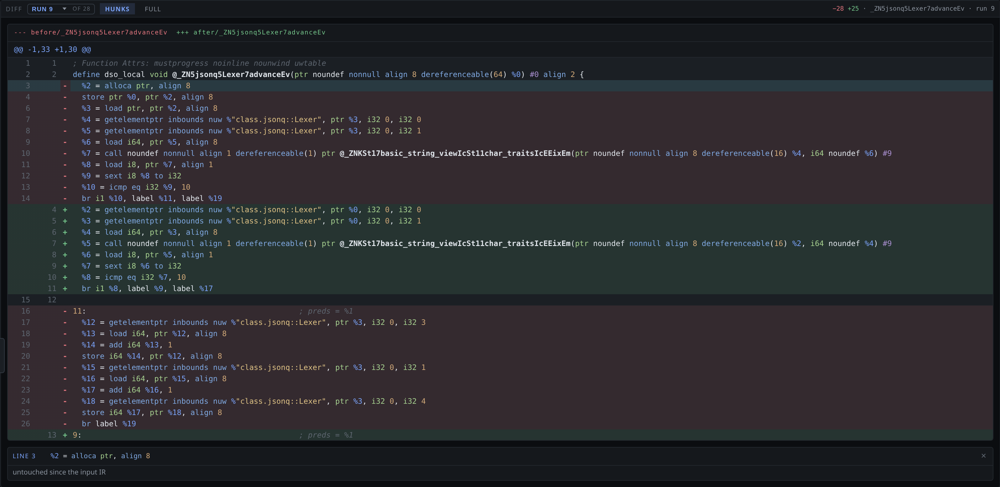
%2 = alloca ptr, align 8, and
the answer is untouched since the input IR — it came from
clang -O0 and SROA is the first thing to touch it. Clicking a
green line instead walks forward from wherever that line was
created.The diff view answers questions about one pass. The flow view answers the
question you have before you know which pass to look at: where in this
pipeline is anything happening? It lays the lane out as a serpentine, one
node per pass, and collapses consecutive passes that changed nothing into a
single N passes · unchanged span. Those collapsed spans are most of
the pipeline, and hiding them is what makes the whole thing fit on a screen.
Because a node is a pass rather than a run, one node carries everything that
pass did in the lane — SROAPass is one box holding all 28 of its
runs, at its first run's ordinal.
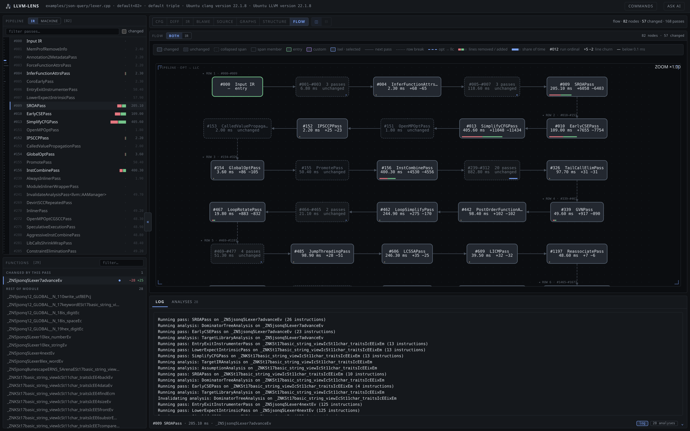
opt -> llc handoff — the one place where LLVM IR
becomes Machine IR. The legend across the top names every mark, including the
purple custom node, which is where a loaded pass plugin shows up. A
first pass down this view says where the work was: three of the first twenty
nodes hold almost all of it, and the long tail is passes moving a few dozen
lines each.The new pass manager is a tree of nested managers, and which manager a pass lives in determines what it can see. Summarising per function and then bundling those into module-level numbers can hide that entirely. The structure view draws the real hierarchy — module, CGSCC, function, loop — with each row's analyses, invalidations and time, so a per-function pass and a module pass are visibly different things.
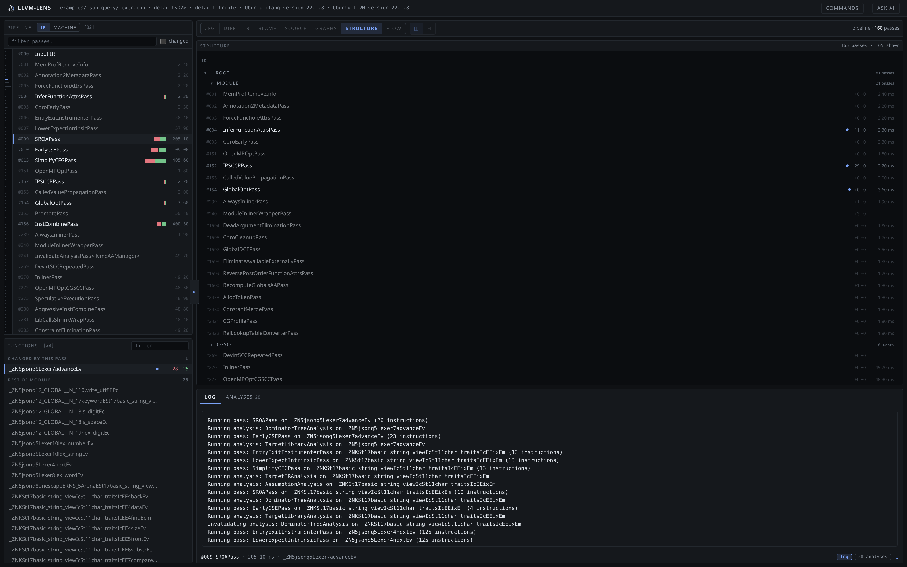
Function 45 passes and
Loop 9 passes visible as their own groups. Every leaf carries the
analyses it ran and the cached results it invalidated, then its time, and
clicking a leaf opens that pass. Read the two columns together and the cost
model shows up: #004 InferFunctionAttrsPass reads
+11 −0 at 2.30 ms — eleven analyses run, nothing thrown away
— while #002 Annotation2MetadataPass reads +0 −0 at
2.20 ms, so the second it costs buys nothing and forces no recomputation
downstream.Each card carries a CFG of the selected function on both sides of the pass. Entry block outlined green, back edges red so loops are visible at a glance, block detail on selection. The zoom readout is live — the pane fits the graph, and you zoom from there.
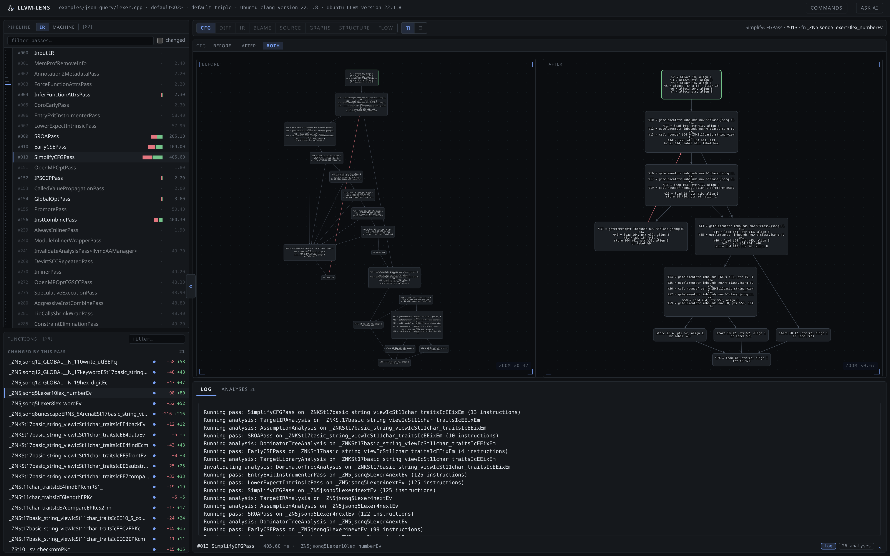
Lexer::lex_number
Before, on the left: 18 blocks at ×0.37 zoom, a tangle of one- and
two-instruction blocks falling out of the switch's comparison chain. After, on
the right: 10 blocks at ×0.67. Same function, same pass, and the
difference between the two pictures is the change — no diff reading
required. The figure was taken on the run that actually did this —
SimplifyCFGPass's 43rd run, chosen in the diff pane — rather than
on the card's default, which is its last; the capture script asserts the block
count dropped before it takes the picture.Seven analyses are drawn from the module as it stands at the end of the
pipeline, and the chips at the top of the pane are the list of them:
PDT post-dominator tree, CDG control-dependence graph, DDG
data-dependence graph, PDG program dependence (both of the above at once),
MDG memory-dependence graph, LNT loop-nest tree, and the module-wide
call graph. These are the views to reach for when the question is
structural rather than textual: the post-dominator tree tells you what must
execute after what, the dependence graphs tell you what a value actually depends
on, and the loop nest tree tells you what LoopVectorizePass was
looking at.
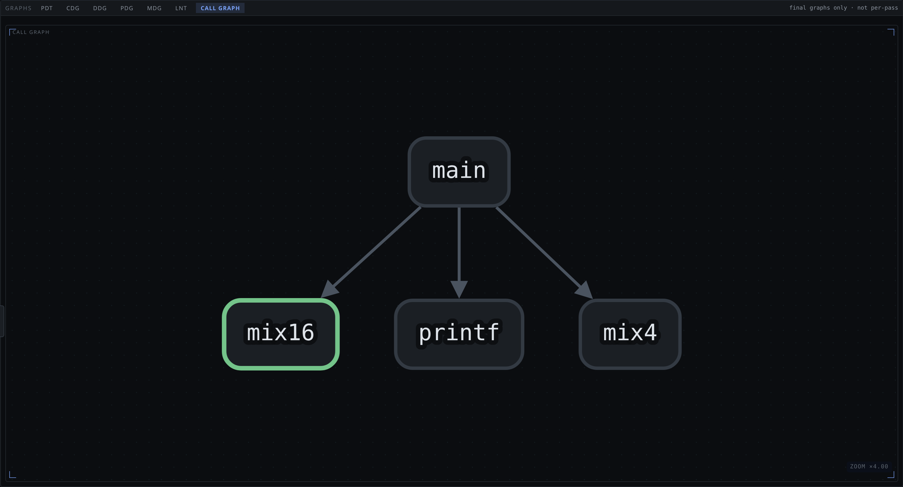
main calls
mix16, mix4 and printf. The chip row is
the honest list — seven graphs, all computed from the final module. This is
also the pane where the honest limit shows: these are final-state
graphs, not per-pass ones, and a per-instruction graph on a real function is
unreadably dense — Lexer::next fits to ×0.18 and reads as a
smear. The report does not pretend otherwise, which is why pass-level
questions are answered by Diff, Blame and Flow instead.When the input carries debug info, every IR line maps back to the C++ line it came from, and the header says how many of them mapped. With inlining in play this is the only practical way to see which source a piece of IR actually belongs to.
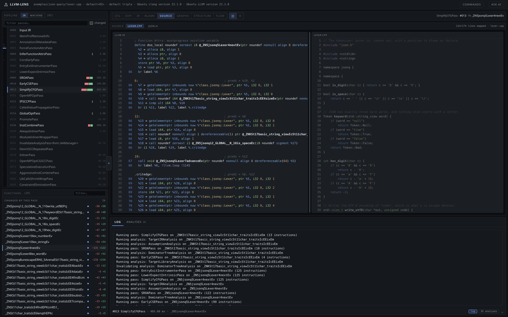
114/174 lines mapped · lexer.cpp, with the file switcher open
The right pane is the real source; the highlighted lines are the ones this
snapshot's IR points at. This is Lexer::next on
SimplifyCFGPass's 18th run, and the snapshot spans two files —
json.h has been inlined into lexer.cpp — so a chip
row appears above the source and you switch between them. The stat line
follows the chip: it counts the lines mapped into the file you are looking at,
not the total. The mapping only survives while the dump still carries the
debug metadata: later in the pipeline opt has stripped it, and
the pane says so in as many words — no mapped lines for this function at
this pass — rather than showing an empty box that reads like a bug.
The middle-end view is IR to IR. But the question "why is the generated code bad?" lives at the seam: which IR instructions became which machine instructions, and which machine instructions became which assembly lines.
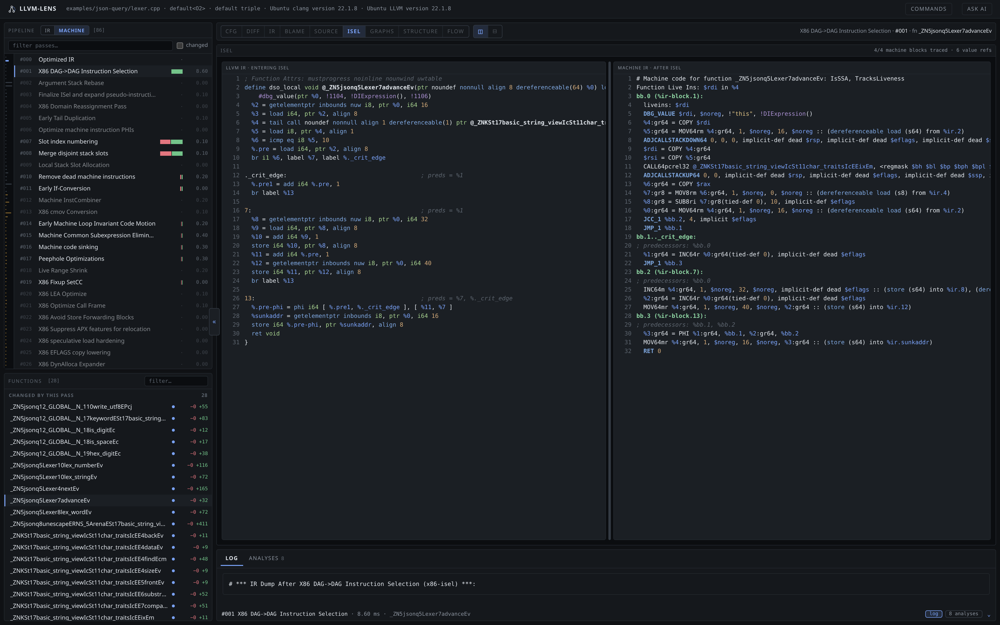
4/4 machine blocks traced · 6 value refs
Left, the IR entering selection; right, the Machine IR leaving it. The pairing
is not a guess about ordering — llc names each machine block
after the IR block it came from (bb.2 (ir-block-7)), and value
operands carry %ir.N references, so
%7:gr8 = MOV8rm … (dereferenceable load (s8) from %ir.4) really
does point at a specific IR line. The header counts how much of the mapping
was recovered, so you can tell a complete answer from a partial one.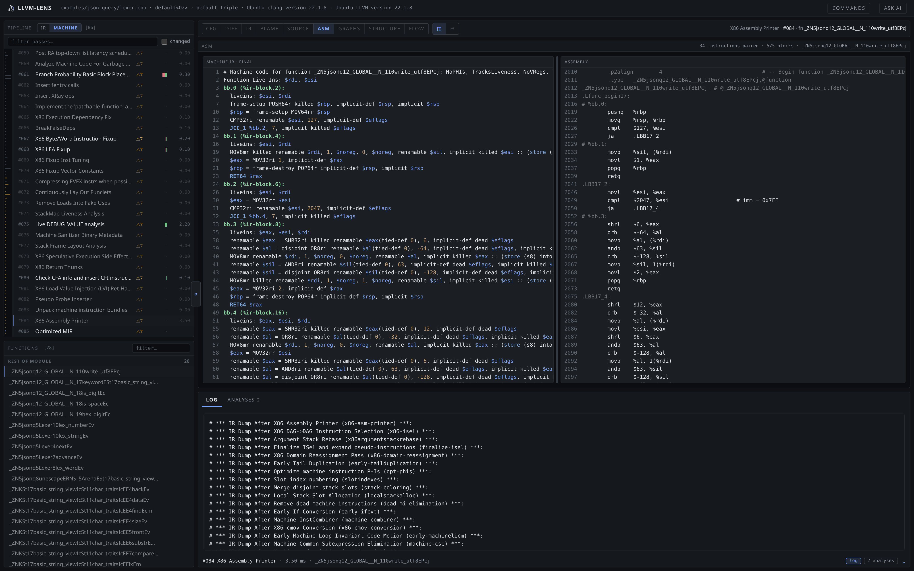
34 instructions paired · 5/5 blocks. The alignment is a longest
common subsequence over an opcode-compatibility predicate — JCC_1
against ja, MOV64mr against movq — so
it survives the assembler spelling things differently, and it reports how much
it could not pair instead of silently dropping it.When the allocator runs out of registers it spills, and spilled code is usually the answer to "why is this slow". The backend passes carry their own drawers: a spill table naming every slot and the block it spilled in, and a register map from virtual register to physical register or stack slot, per function.
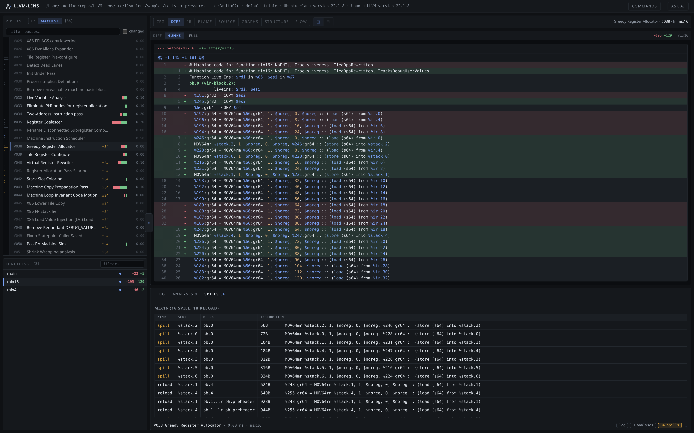
mix16, 16 spills and 18 reloads
Greedy Register Allocator — the card is badged with the count (34) and so
is every card downstream of it, because the count is a property of the
function after allocation, not of one pass. The diff above shows
$gr64 virtual registers turning into
MOV64mr %stack.N, … stores; the Spills drawer below names
the slot, the block (bb.0, bb.4,
bb.1..lr.ph.preheader) and the exact instruction, which is the
difference between knowing there are 34 spills and knowing where to look.The companion drawer is the register map on Virtual Register
Rewriter, the pass where virtual registers become real ones: for
main it is nineteen rows, %1 -> $rax,
%5 -> $rax, %3 -> $noreg. Switch the function to
mix4 in the same report and it is seven rows, every one a physical
register, no stack slot anywhere. Same report, same pipeline, two outcomes —
which is the whole reason that sample exists. Switch to the
Spills drawer on mix16 and the same contrast is there
in the numbers: 34 spills against none.
A tool for reading LLVM's pipeline is only half useful if it stops at the
edge of the passes LLVM ships. Pass --load-pass-plugin and
--custom-pass and your pass appears in the rail, in the flow, in
the structure tree and in the blame chains, badged so it is never mistaken for a
stock one. Because opt dumps custom passes less predictably than
built-in ones, the tool forces a dump for them.
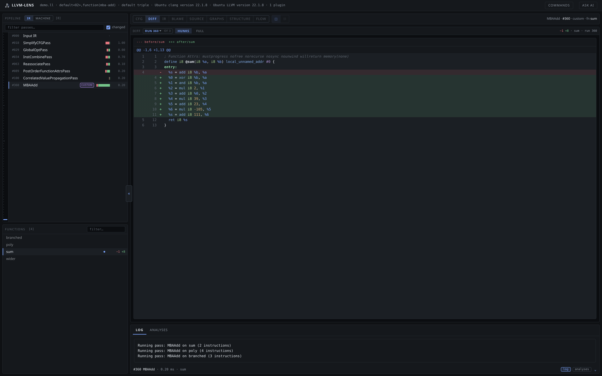
+8 −1, on sum
MBAAdd rewrites a + b into a mixed boolean-arithmetic
equivalent: %s = add i8 %b, %a becomes eight instructions ending
%s = add i8 111, %6. Same value, unrecognisable shape — the kind
of transform the blame chain is there to survive. The header reads
1 plugin, the rail badges the card custom in purple, and
the context line reads MBAAdd · #360 · custom. Note the run
number: each of its three runs rewrote a different function, and the
card opens on its last, so this figure was taken on run 360 with the run
picker. Only one of the four functions in the module changed in any one run;
the pass is selective, and the card shows that rather than implying
otherwise.The same pass appears in the structure tree as #360 MBAAdd,
badged custom, sitting inside Function 5 passes where
a function pass belongs rather than alongside the module passes. And it is one
purple node in the flow view — one node for the pass, however many runs it made,
which is the same rule every other pass in that view follows. The plugin was
wired entirely by a committed llvm-lens.yml beside the example, so
running llvm-lens demo.ll in that directory needs no flags at all;
the config file that did it is named in the report's own metadata, and it is
worth a look on its own — section 05 takes it
apart.
One translation unit is the common case, but the tool is not limited to it.
Link seven translation units of a real program into one module and the report
grows to match — same views, same blame, 99 functions instead of 29, and the same
168 cards, because the pipeline is the same pipeline. What grows is inside them:
the SROAPass card that holds 28 runs over one file holds 98 over the
linked module, 830 runs in the lane against 264.
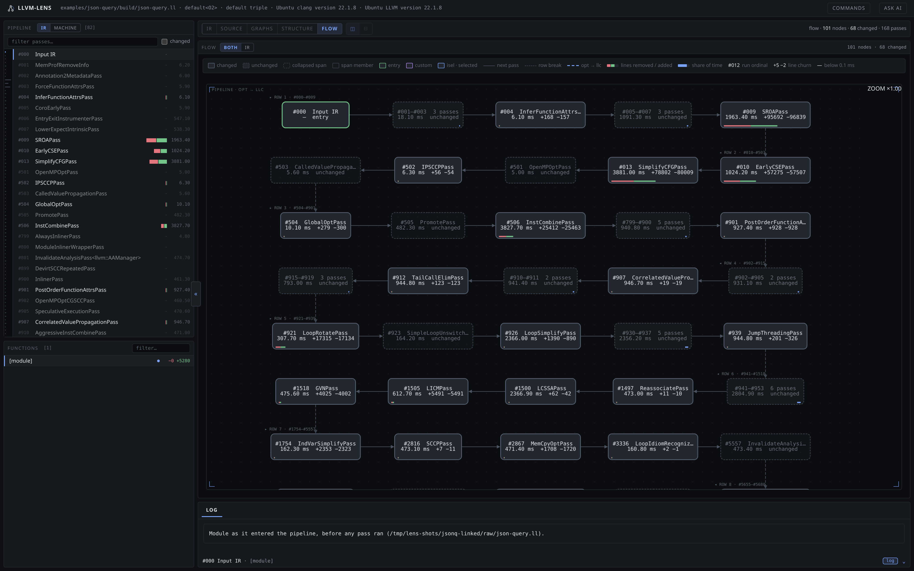
default<O2> pipeline, and the same 168
cards the single-TU report has: a bigger module does not add passes, it adds
runs inside them, and the churn numbers are module-scope —
+95692 −96839 summed across SROAPass's 98 runs —
because at module level every function's edits land in one diff. Cost is real
and we would rather say it than hide it: this report took about three minutes
of tool time and writes 2.3 GB of intermediate dumps. The single-TU
report of the same program is 21 seconds and 313 MB, and shows every
feature the bigger one does.A report that is going to be attached to a bug or argued over in review needs to say what produced it. The report carries the config file it read, the plugins it loaded, and the LLVM and clang versions — and a commands sheet prints the verbatim argv of all three tool invocations, each with a copy button. This is the whole of what LLVM-Lens asks of LLVM, and it is what the report behind Figure 2 ran:
$ clang-22 -S -emit-llvm -O0 -Xclang -disable-O0-optnone -g \ -o raw/lexer.ll examples/json-query/lexer.cpp $ opt-22 -S -passes=default<O2> -print-changed=quiet -print-module-scope \ -debug-pass-manager -time-passes -o raw/opt-final.ll raw/lexer.ll $ llc-22 -print-after-all -debug-pass=Structure -time-passes \ -o raw/final.s raw/opt-final.ll
Every report carries these, so a reader can reproduce an analysis exactly
rather than approximately. The build flag --no-ai is the other half
of that: a report is a directory you will copy to a colleague or attach to a
bug, and a credential in it would travel with it. --no-ai writes it
with no key and no AI panel at all. Every report in this document was built that
way — except the one behind Figure 15, which needed a live key to produce a
real answer and was built locally, never committed, and deleted once the figure
was taken.
There is an optional ask AI panel, backed by your own Anthropic or OpenAI-compatible key and off until you configure one. Its whole value is that you never have to explain what you are looking at — the panel already carries the selected pass with its run count, lane, scope, churn, spill count, functions and analyses, the selected function and its diff, a bounded window of the mapped C++ under it, and the pass log. It is the same state the panes behind it are drawn from, so the question is the question you actually have:
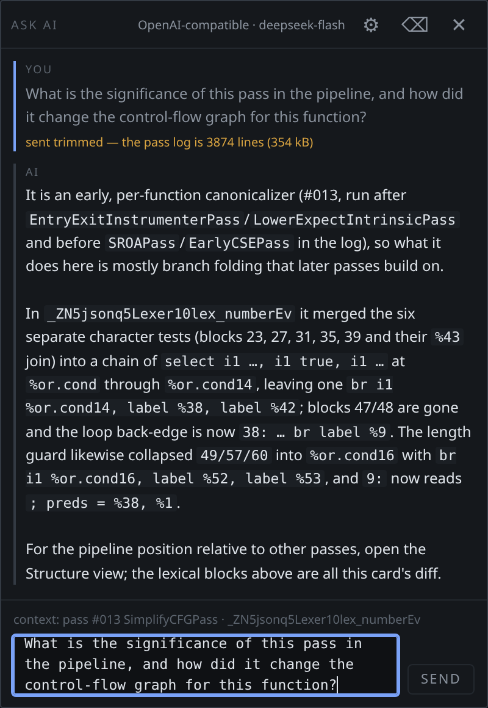
pass #013 SimplifyCFGPass ·
_ZN5jsonq5Lexer10lex_numberEv — pass and function, the same line the
panes behind are showing. Nothing in the question names either. The answer
places the pass from the log (after
EntryExitInstrumenterPass/LowerExpectIntrinsicPass, before
SROAPass/EarlyCSEPass), then names the change: six character tests and
their %43 join folded into one select chain at
%or.cond…%or.cond14, leaving a single
br i1 %or.cond14, blocks 47/48 gone, the loop
back-edge renumbered to 38, and 9: now reading
preds = %38, %1. Every one of those claims is checkable against
the CFG pane, which is what makes the panel useful rather than merely fluent.
One honest detail survives in the figure: this card's pass log is 354 kB,
so the panel asked before sending it and the prompt went
trimmed.Four things are worth explaining properly: the blame walk, the two correlation layers, and the file that says how to build the report at all. The rest is parsing.
The dumps give us a sequence of states. Blame turns that sequence into per-line history, and the whole thing hinges on getting one judgement right: what counts as the same line, changed versus a different line.
Between two consecutive states the tool strips the common head and tail and
runs an LCS diff over what is left. Each surviving line is then compared through
a normalising key: SSA numbers are erased, block labels are erased, and what
remains is the instruction's actual shape. So %3 = load i64, ptr %2
becoming %7 = load i64, ptr %5 is classified renamed — the
same instruction after renumbering — while
%3 = load i64, ptr %2 becoming
%7 = getelementptr inbounds nuw %"class.jsonq::Lexer", ptr %0, i32 0, i32 3
is rewritten, and a line that was not there before is created.
That distinction is the difference between a history you can read and a list of every pass in the lane. Without it, every one of SROA's 28 runs and SimplifyCFG's 45 would claim whatever line it renumbered, and the chain would be noise. The chains are interned — pass names, events and history links are stored once and referenced — so the report ships the final state of the module as text rather than every intermediate state it walked through.
Correlating IR to Machine IR could have been done by matching instruction
order and hoping. It isn't, because llc already leaves better
evidence than that: each machine basic block is named after the IR block it came
from, and machine operands that came from IR values carry %ir.N
markers. The tool reads those names instead of inferring the correspondence, and
reports coverage — 4/4 machine blocks traced · 6 value refs — so a
partial mapping is visibly partial.
Assembly is where machine instructions end up as text, and the printer does
not preserve one-to-one ordering. The tool aligns the two by longest common
subsequence over an opcode-compatibility predicate — JCC_1 with
ja, SETCC with sete,
CMOV with cmov — which tolerates the assembler's
spelling without pretending the two sequences are identical. What it cannot
pair, it leaves unpaired and counts.
Worth being precise about. Every pass list, every diff, every line of IR and
Machine IR, every timing and every analysis name comes from LLVM's own output.
We parse it, order it, join it, and lay it out. The blame chains, the ISel and
assembly correlation, the analysis graphs (dominators, dependence, loop nesting,
the call graph), and the flow view's collapsing are ours — computed in Python,
from the IR that opt and llc printed.
Two consequences. First, a bug in LLVM's dump is a bug in our report. Second,
the report can be wrong about interpretation but never about
content: the IR text in the diff is the text opt wrote,
character for character.
The flags are the interface. They are not the workflow. Nobody retypes
--load-pass-plugin ./libMBAAdd.so --custom-pass mba-add --no-ai
every time they rebuild the report they are actually working on, and most of
what you want to say is not a flag at all. So LLVM-Lens also reads its settings
from a file.
It looks for llvm-lens.yml — or .yaml, or
.llvm-lens.yml — in the working directory and then in every parent,
and falls back to ~/.config/llvm-lens/config.yml;
LLVM_LENS_SETTINGS or --config replaces the search
entirely, and --no-config turns it off. Paths written in the file
resolve against the file rather than your shell, so a config can be committed
beside the code it analyses and behave the same from any directory.
output is the one exception and stays relative to where you ran the
command. Every key is optional, and a flag always wins over the file — the file
is where you put what you already know, and the flag is for the one thing that
is different today.
# examples/mba-add/llvm-lens.yml — the whole file plugins: dir: . # bare names resolve here, so no loader path needed pass: [libMBAAdd.so] custom-passes: [mba-add] # appended as function(mba-add), and badged ai: false # a report directory is meant to be shared ui: changed-only: true # the passes that changed nothing are noise
With that file in place, the entire command is
llvm-lens demo.ll. The toolchain lives there too — which LLVM
version you are on, where its binaries are, the target triple — along with the
pipeline string, extra arguments for each of the three invocations, the timeout,
which plugin kind you are loading, and whether source correlation is worth its
extra llc run.
The ui: block is the part that saves the most, and it has no
flag equivalent at all. It sets the report's own opening state: which lane and
which view, which analysis graphs to draw, the split direction and ratio, which
drawer tab is open, and whether the pass list starts filtered to the passes that
changed something. A report you rebuild ten times a day opens ten times already
pointed at the question you are asking, instead of at the default view of a
pipeline you have read a hundred times.
Two details make it safe to leave lying around. An unknown key is refused
with the nearest real key suggested, rather than silently ignored — the failure
mode you would otherwise hit is a plausible-looking file that does nothing. And
llvm-lens --init-config writes a fully commented starter with every
key at the value it already has, so the file is discoverable without reading the
source. The report carries the config it read in its own metadata, so a report
that surprises you still says where its settings came from.
The report is index.html plus a data/ directory of
JSON chunks, with a copy of the frontend. Each chunk is written twice — as
.json and as a .js that assigns the same object to a
global — so the page works when opened straight off disk with
file://, where fetch is not allowed. No server, no
CORS, and a report you can zip and email. It also means the report has no
runtime dependency on this project at all: it is a document.
Everything in this document was produced by the code in the repository, on 18 September 2026, on a stock LLVM 22.
# needs python 3.10+ and llvm 22 tools on PATH git clone https://github.com/manasghandat/LLVM-Lens.git cd LLVM-Lens pip install -e . llvm-lens --sample --open # a report, no input file needed llvm-lens yourfile.cpp --passes 'default<O2>' -o report
Five samples ship with the package — licm,
register-pressure, side-channel,
switch-lowering, vectorize — each written so one
behaviour is legible. examples/json-query/ is a working JSON parser
in seven translation units; examples/mba-add/ is an out-of-tree
pass plugin with the config file that wires it into the report.
Before you type that second command twice, run
llvm-lens --init-config: it writes a commented
llvm-lens.yml listing every setting at the value it already has, and
from then on the pipeline, the toolchain, the plugins and the report's opening
view come from the file instead of your shell history. Section 05 explains
what goes in it; it is the difference between a tool you invoke and a tool that
already knows what you are working on.
GPL-3.0. Built for SEGFAULT Compiler Hackathon 2026. The problem statement asked for an explainable, evidence-backed view of LLVM's optimization pipeline — which passes ran, what they changed, how significant each change was, and how it affected final codegen. That is what is in the repository, and what is in the figures above.